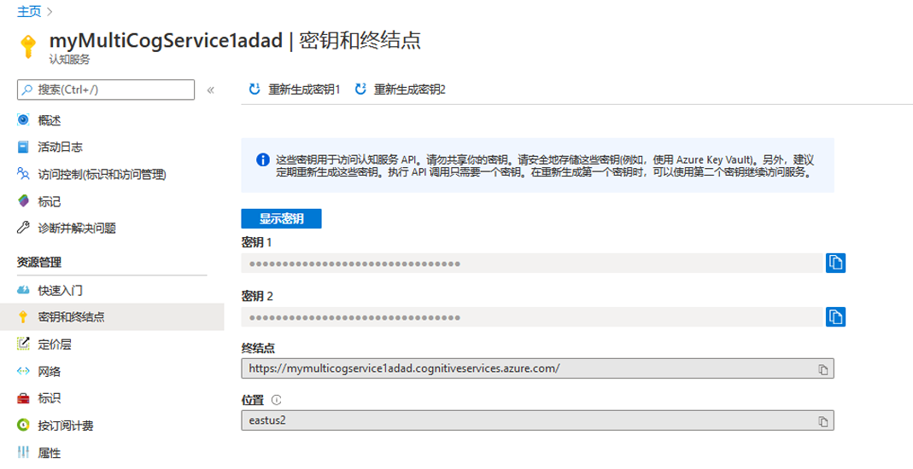
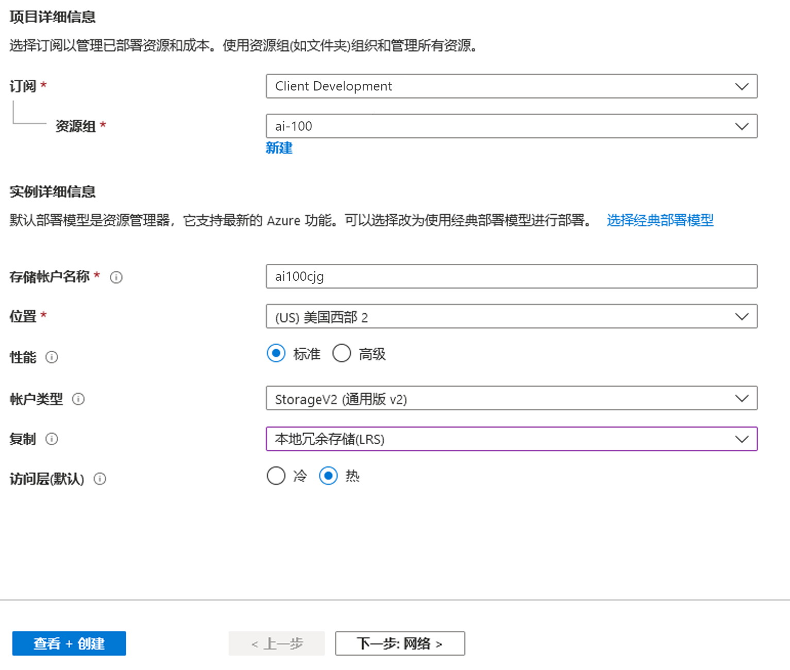
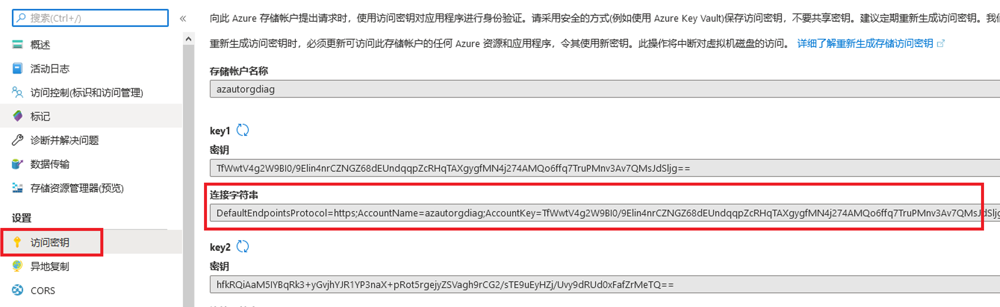
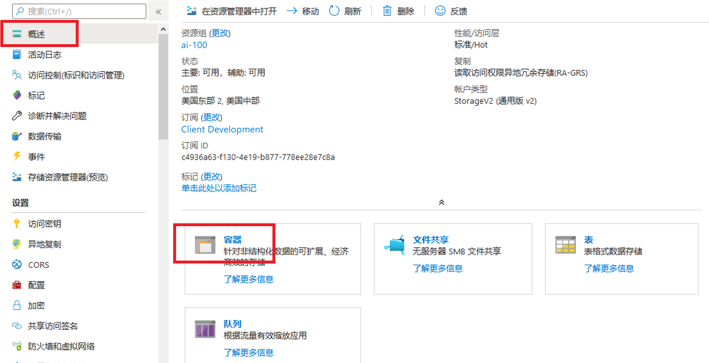
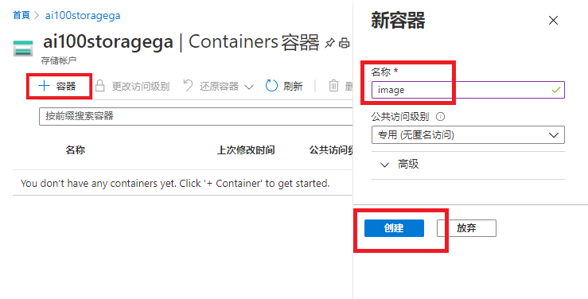
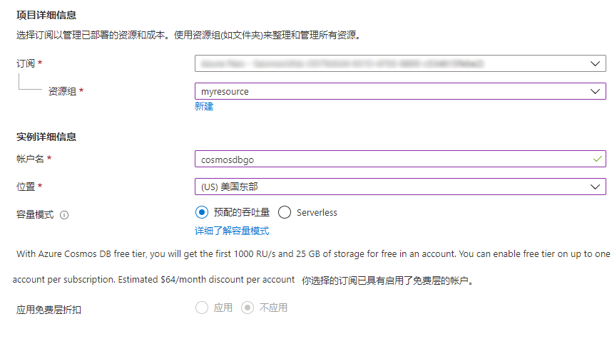

这个实验适用于使用 Azure 的人工智能 (AI) 工程师或 AI 开发人员。为确保你有时间完成练习，在开始这个课程的实验之前，需要满足一些要求。
理想情况下，你之前应接触过 Visual Studio。我们将把它用于在实验中构建的所有内容，因此你应熟悉如何使用它创建应用程序。此外，这不是我们教授代码或开发的课程。我们假设你熟悉 C#（中级水平 - 你可以在这里和这里学习）。
注意，可以使用不同的环境来完成此实验室。 讲师将指导你完成必要的步骤，以启动和运行环境。 这可以像你使用计算机登录课堂一样简单，也可以像设置虚拟化环境一样复杂。 这些实验室是使用 Azure 上的 Azure 数据科学虚拟机 (DSVM) 创建和测试的，因此需要使用 Azure 帐户才能使用。
你可以在以下位置激活 Azure 免费试用版：https://azure.microsoft.com/zh-cn/free/。
如果你已获得用于完成这个实验的 Azure Pass，则可访问 http://www.microsoftazurepass.com/ 激活它。 请按照 https://www.microsoftazurepass.com/howto 上的说明进行操作，其中记录了激活过程。 Microsoft 帐户可能具有 Azure 的一个免费试用版以及与之关联的 Azure Pass，因此如果你已在 Microsoft 帐户上激活 Azure Pass，则需要使用免费试用版或使用其他 Microsoft 帐户。
这些实验室旨在与 .NET Framework（其使用在 Microsoft Windows 操作系统上运行的 Visual Studio 2019）一起使用。虽然存在用于 Mac OS 的 Visual Studio 版本，但是 Mac OS 平台不支持示例代码中的某些功能。因此，可以使用虚拟机解决方案提供托管实验室选项。你的讲师将提供有关使用 VM 解决方案的详细信息。最初的研讨会旨在用于 Data Science Virtual Machine (DSVM)，并使用 DSVM 对其进行了测试。只有高级 Azure 订阅才能在 Azure 上实际创建 DSVM 资源，但实验室可通过运行 Visual Studio 2019 的本地计算机完成，并在整个实验步骤中列出所需的软件下载。
在进行这个实验的过程中，我们将收集各种认知服务密钥和存储密钥。你应将所有内容保存在文本文件中，以便在将来的实验中轻松访问它们。在本实验中，不会填充其中部分内容。
密钥
- 认知服务 API URL：
- 认知服务 API 密钥：
- LUIS API 终结点：
- LUIS API 密钥：
- LUIS API 应用 ID：
- 机器人应用名称：
- 机器人应用 ID：
- 机器人应用密码：
- Azure 存储连接字符串：
- Cosmos DB URL：
- Cosmos DB 密钥：
- DirectLine 密钥：
以下步骤将为随后的实验配置 Azure 环境。
第一个实验专注于计算机视觉认知服务。Microsoft Azure 允许创建一个涵盖所有服务的认知服务帐户，但你也可以选择为单个服务创建认知服务帐户。 在以下步骤中，你将创建一个包含所有可用认知服务终结点的单一 Azure 资源。
打开 Azure 门户
选择“+ 创建资源”，然后在搜索框中输入“认知服务”
从可用选项中选择“认知服务”，然后选择“创建”
备注：再次重申，可以创建特定的认知服务资源，也可以创建包含所有终结点的单个资源。
键入自己选择的名称
选择订阅和资源组
选择 S0 定价层
勾选确认复选框
[!备注] Microsoft 定期更新 Azure 门户和服务。 撰写本文时，这些步骤均包含适当的项目，但如果 Azure 发生了更改，选项和对话框 可能会有所不同。 如果遇到任何异常情况，请咨询讲师。
选择“查看 + 创建”
验证通过后，选择“创建”
导航到新资源，在左侧工具栏 “资源管理器” 部分，选择 “键和终结点”
将 API 密钥和终结点的 URL复制到记事本

在 Azure 门户中，选择 “+ 创建资源”，然后在搜索框中输入 “存储”
在可用选项中选择 “存储帐户”，然后选择 “创建”
选择订阅和资源组
键入帐户名称，使用你的姓名首字母缩写来保持唯一。ai100storagego
对于“位置”，选择与资源组一致的位置
性能应该为 “标准”
帐户类型应为 “StorageV2 (常规用途 v2)”
对于复制，选择 “本地冗余存储(LRS)”

选择“查看 + 创建”
选择 “创建”
导航到新资源，并选择 “访问密钥”
将连接字符串复制到记事本

选择 “概述”，然后选择 “容器”

选择 “+ 容器”
在名称处输入 “images”

选择“创建”
打开 Azure 门户
选择 “+ 创建资源”，然后在搜索框中输入 “cosmos”
从可用选项中选择 “Azure Cosmos DB”
选择 “创建”
选择订阅和资源组
输入唯一的帐户名称，例如 ai100cosmosdbgo
选择与资源组匹配的位置

配置其余选项，如上图所示
选择“查看 + 创建”
选择 “创建”
导航到新资源，在 “设置” 下选择 “密钥”
将 URL 和主密钥复制到记事本
我们将使用适用于 C# 的 Bot Builder 模板，以在这个课程中创建机器人。
在浏览器中打开这里的 C# Bot Builder SDK v4 模板
选择 “下载”。
导航到下载文件夹位置，然后双击安装
请务必选择 Visual Studio 的所有版本，然后选择 “安装”。 如果系统有提示，请选择 “结束任务”。
选择 “关闭”。现在，机器人模板应该已添加到 Visual Studio 模板。
我们将使用最新的 .NET SDK (v4) 开发机器人。 为了进行本地测试，我们需要下载 Bot Framework Emulator。
可以下载 v4 Bot Framework Emulator，以在本地测试机器人。其余实验的说明将假设你已下载 v4 Emulator。
转到此页面并下载带有“4.6.0”或更高版本标记的最新版模拟器（如果使用的是 Windows，请选择“*-windows-setup.exe”文件）。
注： 模拟器的安装位置为
"C:\Users\_your-username\AppData\Local\Programs\@bfemulatormain\Bot Framework Emulator.exe"，但也可以在开始菜单中搜索“bot framework”以访问它。
为了加深你对此处描述的体系结构的理解，并让团队的更多成员参与 AI 解决方案的开发，我们建议你查看以下资源：